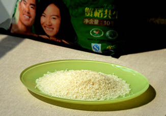
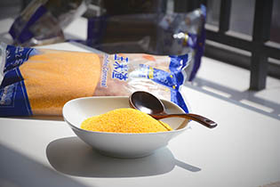

牛肉选购，比蔬菜麻烦多了。蔬菜只用担心农药问题，对于动物，则要考虑抗生素、病死肉等等。我们选择了鑫枫牧业的牛肉，该公司是全运会的供货商，按照欧盟EEC卫生标准加工。包装袋上的“动物产品检疫合格”的小蓝标签，是你们对我托付的信心保证。
我们选用金龙鱼的“生态稻”，其产区位于世界上仅有的三大黑土区。黑土地有机质含量大约是黄土的十倍，而且东北大米一年只收获一次，相对于南方大米一年能收获2~3次，东北大米品质自然要好一些。我们在盲测了十几款大米后，最终生态稻以口感、外形、香味得到大家的肯定。
大家都知道每天食用粗粮的好处，很多人会把玉米渣、荞麦、糙米等等加入大米中。但是花生和玉米都容易受到黄曲霉感染，处理不好可能会有安全隐患。
黄曲霉毒素是毒性最强的一类生物毒素，是肝癌发生的重要原因。黄曲霉毒素耐高热，100℃、20小时也不能将其全部破坏，在280℃时发生裂解。这意味着，任何烹饪手段都无法将其去除。只能从源头保证。
我们选用麦德龙的厨之选玉米粒，其原产地追溯体系保证品质标准，也让柠檬时光成为你的安心之选。